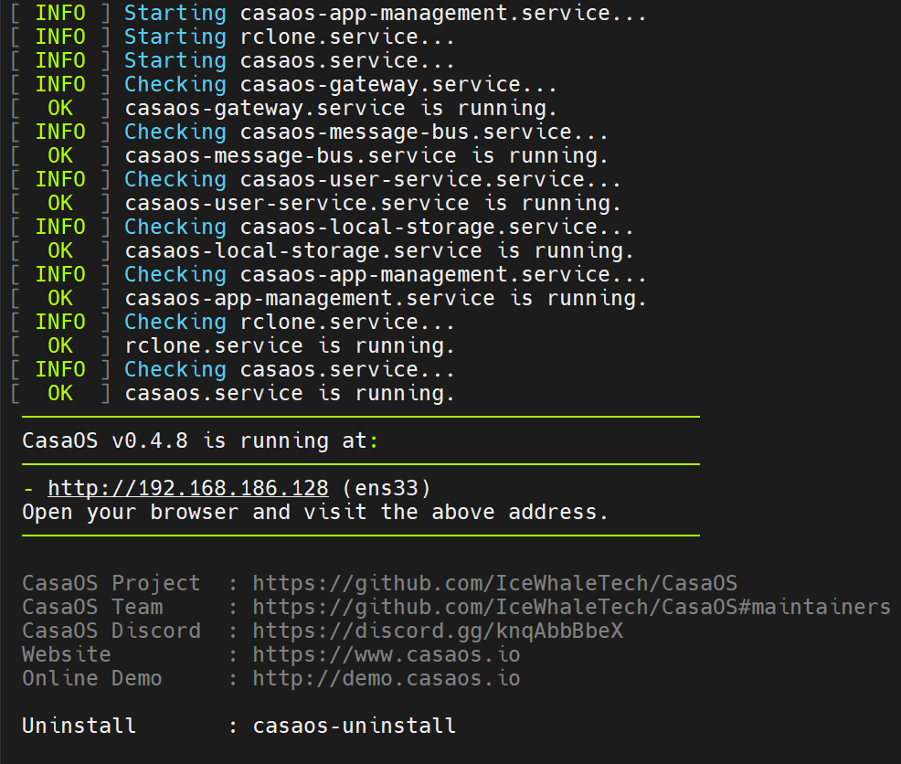

2024-05-12
CasaOS
修改于: 2024-05-12开源私有家庭云系统
地址: https://github.com/IceWhaleTech/CasaOS
安装
wget -qO- https://get.casaos.io | sudo bash
# or
# curl -fsSL https://get.casaos.io | sudo bash
# 网不好再试试国内的, 虽然上面会检查网络符合条件自动切国内
# curl -fsSL http://cn-get.casaos.io | bash
如果是非 root 用户安装, 可能需要直接将脚本下载下来, 改一下里面几个需要权限的地方
我修改的部分
# ...
# Download And Install CasaOS
DownloadAndInstallCasaOS() {
if [ -z "${BUILD_DIR}" ]; then
${sudo_cmd} rm -rf ${TMP_ROOT}
mkdir -p ${TMP_ROOT} || Show 1 "Failed to create temporary directory"
TMP_DIR=$(${sudo_cmd} mktemp -d -p ${TMP_ROOT} || Show 1 "Failed to create temporary directory")
# 这一句是新增的, 可以搜索上面的部分
sudo chmod -R 777 "${TMP_DIR}"
# ...
# 这一句是新增的
sudo chmod -R 777 "$PREFIX/etc/casaos"
# 可以搜索此部分
# Modify app store configuration
sed -i "s#https://github.com/IceWhaleTech/_appstore/#${CASA_DOWNLOAD_DOMAIN}IceWhaleTech/_appstore/#g" "$PREFIX/etc/casaos/app-management.conf"
# ...
装好后效果

卸载
# v0.3.3 or newer
casaos-uninstall
# Before v0.3.3
# curl -fsSL https://get.icewhale.io/casaos-uninstall.sh | sudo bash
默认账户
找了半天没找到默认账户是多少...
无奈只有重置账户密码, 进入欢迎注册界面
ls /var/lib/casaos/db/user.db
sudo mv /var/lib/casaos/db/user.db /var/lib/casaos/db/user.db.backup
sudo systemctl restart casaos-user-service.service